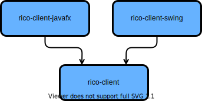
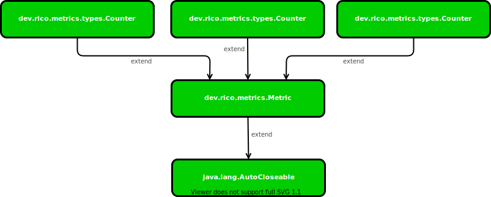
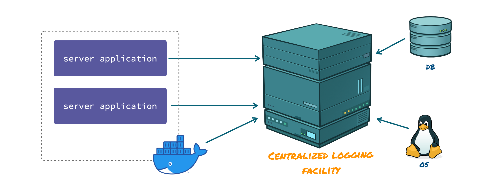
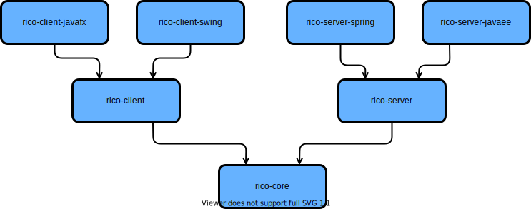

1. Introduction
Rico is a project that provides several functionalities and APIs to create enterprise applications. This includes features like tracing or monitoring that are critical in developing applications, especially in modern cloud based and distributed application landscapes. Thus, Rico provides generic APIs with specific implementation for the mostly used frameworks and toolkits in modern application development.
Rico provides the mentioned features in modules that can be used on their own or in combination.

Rico originates from the Dolphin Platform which appears to be discontinued. Rico is an (originally) API compatible fork that we continue to develop and improve.
1.1. Rationale
The motivation for us to create Rico is to avoid code for standard use-cases to be written over and over again. Thus, we created it as an extension to commonly used frameworks like Spring and Jakarta EE (Java EE) that is easily adoptable.
The outcome is a framework that is built on top of well-known frameworks combined with commonly used components and prepared to be used with a very short warmup. Rico helps you to build your applications in a short time while letting you focus on the business requirements. It offers standard solutions for common technical use cases like Data Access, Logging, Monitoring and Security already built in and is well prepared to get integrated in your environment.
To achieve this, Rico provides clean APIs to separate complexity coming from the set of technologies required to build your solution from your actual code.
Also, Rico provides a remoting layer that helps you to separate UI framework specific code so that is a lot easier to switch UI implementations. It also enables you to choose different technologies for every target platform. As we see a very rapidly changing environment in UI technologies, this separation helps to protect your investment put into the solution built with Rico as it will be less dependent on a concrete UI technology.
2. Core API
Rico provides several general APIs and functionalities in the dev.rico.core module.
All those functionalities are not client or server specific.
This chapter gives an overview of the basic APIs and concepts that can be found in the dev.rico.core module.
2.1. Scheduler API
The Scheduler API is a concurrent API that lets you schedule periodic or delayed tasks.
The central point of the API is the interface dev.rico.core.concurrent.Scheduler.
Depending on your environment Rico provides different ways to obtain a Scheduler instance.
The Scheduler interface only provides one method: schedule(Runnable task, Trigger trigger).
This method is used to schedule a task (the given java.lang.Runnable) for later and possibly periodic execution.
When the task will be executed must be specified by the trigger defined by the interface dev.rico.core.concurrent.Trigger.
While you can implement this interface yourself, the interface dev.rico.core.concurrent.Trigger provides static methods to create triggers.
2.1.1. Defining a trigger that delays the execution of a task
To delay the execution of a task the static method in(final Duration delay) of the interface dev.rico.core.concurrent.Trigger can be used.

The following code shows an example of the usage:
final Scheduler scheduler = ... (1)
final Duration tenSeconds = Duration.of(10, ChronoUnit.SECONDS); (2)
final Trigger trigger = Trigger.in(tenSeconds); (3)
scheduler.schedule(() -> System.out.println("ALARM"), trigger); (4)| 1 | depends on your environment |
| 2 | defines a duration of 10 seconds using the java.time API |
| 3 | creates our trigger using the duration as the delay |
| 4 | schedules the task. Because of our trigger the task will be executed 10 seconds later and "ALARM" will be written to the console. |
2.1.2. Defining a trigger that executes a task periodically
To execute a task periodically the static method every(final Duration duration) of the interface dev.rico.core.concurrent.Trigger can be used.
After the task execution is finished the task will be scheduled again for future execution based on the given delay.
This will repeat until the application stops.

The following code shows an example of the usage:
final Scheduler scheduler = ... (1)
final Duration tenSeconds = Duration.of(10, ChronoUnit.SECONDS); (2)
final Trigger trigger = Trigger.every(tenSeconds); (3)
scheduler.schedule(() -> System.out.println("PING"), trigger); (4)| 1 | depends on your environment |
| 2 | defines a duration 10 seconds using the java.time API |
| 3 | creates our trigger |
| 4 | schedules the task. Because of our trigger the task will be executed with a delay of 10 seconds every 10 seconds and "PING" will be written to the console until the application stops. |
nowAndEvery(final Duration duration) can be used to ignore the initial delay.
afterAndEvery(final Duration delay, final Duration duration) can be used to specify a custom initial delay.

2.2. Application Context API
Rico provides an application context that can be used to hold attributes in a global and a per-thread context. An attribute is defined as a key-value pair. Both key and values are strings. These pairs can be stored and read from the global context or the context of the current thread only. All attributes describe metadata to help in debugging, maintaining and analysing an application.
The interface dev.rico.core.context.RicoApplicationContext defines the application context in Rico and provides several methods to store and receive context based information.
Depending on your environment Rico provides different ways to obtain a RicoApplicationContext instance.
The following sample shows how values can be stored:
final RicoApplicationContext ricoContext = ... (1)
ricoContext.setGlobalAttribute("application.type", "microservice"); (2)
ricoContext.setThreadLocalAttribute("thread.type", "background thread"); (3)| 1 | depends on your environment. |
| 2 | here an attribute is stored in the global context. "application.type" is the name / key of the attribute and "microservice" is the value |
| 3 | here an attribute is stored in the context of the current thread. |
When storing thread based context information you normally want to keep the information for a specific task only and the information will be invalid afterwards. To do so the following pattern is quite helpful when defining attributes in the thread context:
public final Result callDatabase(final String query) {
final RicoApplicationContext ricoContext = ... (1)
final Assignment queryAttributeAssignment = ricoContext.setThreadLocalAttribute("db.query", query); (2)
try {
return db.call(query); (3)
} finally {
queryAttributeAssignment.unset(); (4)
}
}| 1 | depends on your environment. |
| 2 | here the attribute "db.query" is stored in the thread context.
The Assignment instance can be used to remove the added attribute from the context. |
| 3 | While we call our database the context attribute "db.query" will remain set. |
| 4 | Once the database call has been executed we remove the attribute from the thread context by calling the unset() method.
This should always be done in a finally block since an exception my prevent this otherwise. |
2.2.1. Benefits of the application context
The application context in Rico is integrated in several libraries and features of Rico. The remoting library of Rico automatically adds information to the context that can be helpful. The metrics and logging libraries of Rico provide the possibility to enrich metrics and logging with context based attributes through the application context. This allows you to easily assign all logging messages of a server to specific users and requests or to store the metrics of several microservices in the same Prometheus instance and query for a specific instance later. More information can be found in the documentation of the metrics and logging API.

2.2.2. Using the API on the client
In the Rico client API a dev.rico.core.context.RicoApplicationContext instance can be obtained by using by the following call:
final RicoApplicationContext ricoContext = Client.getService(RicoApplicationContext.class);2.2.3. Using the API on the server
On JakartaEE and Spring you can inject a dev.rico.core.context.RicoApplicationContext instance in any managed bean.
The instance is always defined in the singleton / application scope.
2.2.4. Predefined Context values
Rico already defines some context attributes by default. The following table gives an overview of all the context attributes that are defined by default when using Rico.
| attribute name | type | availability | sample | description |
|---|---|---|---|---|
application.name |
global |
always |
myApplication |
The name of the application if defined in the configuration by the "application.name" property. Otherwise "UNKNOWN" |
rico.version |
global |
always |
1.1.0 |
The used version of Rico |
system.os |
global |
always |
mac |
Name of the used operation system. "linux", "mac", "win" or "unknown" |
java.version |
global |
always |
11.0.3 |
The version of the used Java runtime |
java.vendor |
global |
always |
AdoptOpenJDK |
The vendor of the used Java runtime |
system.hostName |
global |
always |
my-macbook.karakun |
The host name of the system |
system.canonicalHostName |
global |
always |
my-macbook.karakun |
The canonical host name of the system |
system.hostAddress |
global |
always |
192.168.178.23 |
The host address of the system |
thread |
thread |
always |
background-thread-2 |
Name of the current thread. This is only supported for threads that are created by Rico |
uiToolkit |
global |
client |
JavaFX toolkit |
The name of the used UI toolkit. This value is only defined when using the rico-client library. |
security.userName |
global |
client |
admin |
When using rico-security this value defines the name of the logged in user on the client |
security.userName |
thread |
server |
admin |
When using rico-security this value defines the name of the logged in user for the current request on the server |
remoting.controller |
thread |
server |
WorkflowController |
Name of the remoting controller when a controller action is executed on the server. |
remoting.action |
thread |
server |
saveUser |
Name of the remoting controller action that is executed on the server. |
http.session |
thread |
server |
1342424 |
id of the http session on the server |
http.clientSession |
thread |
server |
749516 |
id of the http client session on the server |
2.3. Result API
With the Result API Rico offers the functionality to define results of computations that may either result in an exception, or return a successfully computed value. When using for example the stream API of Java one critical topic that is often ignored is the exception handling. The following code shows a bad example of a stream handling that will end in an error:
List<Result> results = Stream.of("1", "TWO", "3", "4")
.map(Integer::valueOf)
.collect(Collectors.toList());This code will throw an exception at runtime once the second input value (TWO) will be mapped by the given Function (Integer:valueOf).
All values that will be provided by the stream after the second value will never be mapped.
If we now assume that the mapping function will send a mail instead of just parsing a number we will end in big trouble.
Once the exception has been thrown we have zero knowledge about the state of our system.
We do not know how many elements were mapped successfully and for how many elements the mapping never happened.
If the stream will be handled in parallel things might even become worse.
Here the Result API of Rico comes into play.
The API provides functionality to handle successful and failed results of calculations like a mapping.
The dev.rico.core.functional.Result provides several factory methods that can be used to create a result.
The following code snippet gives an example how the Result API can be used:
List<Result> results = Stream.of("1", "TWO", "3", "4")
.map(Result.of(Integer::valueOf))
.collect(Collectors.toList());In the given example the mapper wil be executed for all elements of the stream.
Each mapping will end in a dev.rico.core.functional.Result instance that is either successful or failed.
For the input "TWO" the mapping will result in a failed dev.rico.core.functional.Result.
If a result is successful or failed can be checked by calling isSuccessful() or isFailed().
If a result is successful calling the getResult() method will return the wrapped return value of the original calculation.
For a failed result the getResult() method will always throw an IllegalStateException.
Next to this getException() can be called to receive the exception thrown by the original calculation.
For a successful result this will always throw an IllegalStateException.
The following snippet shows a possible use-case of the API:
List<Result<Integer>> results = Stream.of("1", "TWO", "3", "4")
.map(Result.of(Integer::valueOf))
.collect(Collectors.toList());
results.stream().filter(r -> r.isFailed())
.forEach(r -> System.out.println("Error when parsing Integer"));For a better result handling several of the factory methods of the dev.rico.core.functional.Result interface return a dev.rico.core.functional.ResultWithInput.
This interface extends the dev.rico.core.functional.Result and adds the possibility to access the input value of the origin calculation.
With the additional functionality our sample will look like this:
List<ResultWithInput<String, Integer>> results = Stream.of("1", "TWO", "3", "4")
.map(Result.of(Integer::valueOf))
.collect(Collectors.toList());
results.stream().filter(r -> r.isFailed())
.forEach(r -> System.out.println("Error when parsing " + r.getInput()));Instead of extracting the content of the result you can register callbacks which are executed in case of success or failure.
-
Result<U> map(CheckedFunction<R, U>) -
Result<R> recover(CheckedFunction<Exception, R> -
Result<R> recover(CheckedBiFunction<V, Exception, R> -
Result<Void> onSuccess(CheckedConsumer<R>) -
Result<Void> onSuccess(CheckedRunnable) -
void onFailure(Consumer<Exception>) -
void onFailure(BiConsumer<V, Exception>)
There is one more convenience method orElse® which allows to get a default value in case of a failed result.
3. Basic Client API
Rico provides some general functionality, that can be used in any JavaFX or Swing based application:

Besides the UI toolkit independent library rico-client, a Swing client will need rico-client-swing and a JavaFX client will need rico-client-javafx. The Swing and JavaFX specific libraries may provide additional UI toolkit dependent functionality. The toolkit specific libraries should not be used together.
3.1. UI toolkit support in Rico
Rico provides several APIs that automatically handle UI toolkit specific functionalities like thread handling.
To benefit from such features the UI toolkit must be specified in Rico.
A UI toolkit is defined by the interface dev.rico.client.Toolkit in Rico.
At the moment Rico provides an implementation of that interface for Swing and JavaFX.
The following code shows how the ui toolkit can be configured in Rico:
final Toolkit javaFxToolkit = new FxToolkit();
Client.init(javaFxToolkit);For the implemented toolkits Rico provides some convenience methods that make the usage even more easy:
FxToolkit.init();Normally this code should be directly in the main method of your client application, since several functionalities of the Rico client API won’t be usable without a configured UI toolkit.
3.2. UI executor in Rico
When using Swing all UI specific operations need to be handled in the EDT (Event dispatch thread) of Swing.
When using JavaFX all UI specific operations must be handled in the JavaFX platform thread.
Rico provides an abstraction of such threads by providing the interface dev.rico.client.concurrent.UiExecutor.
The interface extends the basic Java java.util.concurrent.Executor interface with some additional helpful methods when working with UI code.
The following code snippet shows how an instance of the UiExecutor can be obtained and used:
UiExecutor uiExecutor = Client.getService(UiExecutor.class); (1)
uiExecutor.execute(() -> updateUi()); (2)| 1 | Here we receive a UiExecutor instance. |
| 2 | By using the executor the given runnable will be executed in the UI toolkit thread. |
3.3. Background executor
Rico’s executor for the UI toolkit provides a background executor backed by a configurable thread pool.
For most use-cases this executor is the only tool you will need to execute background and async tasks in a java client.
The background executor is defined by the interface dev.rico.client.concurrent.BackgroundExecutor.
It extends the basic Java java.util.concurrent.Executor interface with some additional helpful methods and functionalities.
The following code snippet shows how use the background executor:
BackgroundExecutor backgroundExecutor = Client.getService(BackgroundExecutor.class); (1)
backgroundExecutor.execute(() -> longRunningTask()); (2)| 1 | Here we receive a BackgroundExecutor instance. |
| 2 | By using the executor the given runnable will be executed in the background. |
Several APIs of Rico like the Scheduler or the TaskChain are based on the BackgroundExecutor.
3.4. TaskChain API
The TaskChain API provides an easy way to create a chain of individual tasks. The chain provides functionality to switch between the UI thread and background threads.
When creating a client application with UI you normally need to implement long-running tasks like a server call. If such a task is executed on the UI thread no user interaction or repaint / layout of the application can happen till the task is not completed. This will always end up in a bad behavior, since the application looks like it is frozen and maybe pixel artifacts are rendered on the screen if the application’s window is resized or moved. To avoid these problems long-running tasks should always be executed on a background thread.

A background thread in Java can easily be created and used by using the factory methods in java.util.concurrent.Executors.
Much more complex code is needed if we want to react on the result of a background thread in the ui thread.
This pattern is quite common in a client.
Let’s assume you want to trigger a server endpoint and display the result of the call in the client.
Maybe you even want to show a loading animation in the client while the server call is executed and show an error if an exception happens.
The following diagram gives an overview of the needed task:

By using only basic API such a use case will result in a lot of code in Swing or JavaFX. The following code snippet shows how such a workflow can be created in Swing:
//We assume that we are already on the ui-Thread
showLoadingAnimation();
backgroundExecutors.execute(() -> {
try {
final String result = callServer();
SwingUtilties.invokeAndWait(() -> updateUi(result));
} catch(final Exception e) {
SwingUtilties.invokeLater(() -> showErrorDialog(e));
} finally {
SwingUtilties.invokeLater(() -> hideLoadingAnimation(e));
}
});As you can see this is really a lot of code for a common default workflow that you might need multiple times per application.
The TaskChain API helps you to create better readable and maintainable code for scenarios like the described one. The TaskChain provides a fluent API that let you define workflows with multiple switches between background threads and the UI thread. Before we have a deeper look at the API let’s see how the given example would look like by using the TaskChain API:
UiExecutor.createUiTaskChain() (1)
.execute(() -> showLoadingAnimation()) (2)
.background() (3)
.supply(() -> callServer()) (4)
.map(v -> v.getName()) (5)
.ui() (6)
.consume(v -> updateUi(v)) (7)
.onException(e -> showErrorDialog(e)) (8)
.thenFinally(() -> hideLoadingAnimation()) (9)
.run(); (10)| 1 | a "ui task chain" is will execute the tasks in the UI thread. There is also a "background task chain". |
| 2 | the execute() method adds a runnable to the chain. |
| 3 | by calling background() the execution for the coming tasks is switched to a background thread. |
| 4 | the supply() method adds a supplier to the chain. The result of the supplier is available to the next task. |
| 5 | the map() method adds a function to the chain. The result of the function is available to the next task. |
| 6 | by calling ui() the execution for the coming tasks is switched to the UI thread. |
| 7 | the consume() method adds a consumer to the chain. |
| 8 | the onException() method adds an exception handler to the chain. |
| 9 | the `thenFinally()`method adds a runnable to the chain. The finally task is called in any case. |
| 10 | the chain is only executed when run() is called. This allows to create a chain and run it later or even run it multiple times. |
The run() method returns a CompletableFuture which allows the caller of run() to wait for the completion of all tasks in the chain.
Also the caller can determine if the tasks chain completed successfully or not by inspecting the CompletableFuture.
Finally if the output from a task is not consumed by a consumer in the chain than this value can be obtained from the CompletableFuture.
The main entry point of the TaskChain API is the dev.rico.client.concurrent.TaskChain interface.
New instances should always be created by factory methods that are provided by the dev.rico.client.concurrent.UiExecutor interface.
final TaskChain uiChain = UiExecutor.createUiTaskChain();
final TaskChain backgroundChain = UiExecutor.createBackgroundTaskChain();3.4.1. Exception handling in the task chain
Every task in a task chain can potentially throw an exception when it is executed. This influences which of remaining tasks are executed:
-
If a task throws an exception then all the upcoming tasks defined with
execute(),supply(),map(), andconsume()are skipped. Switching between UI and background threads is done in any case. the nextonException()in the chain is invoked. If this exception handler terminates normally than the tasks after the exception handler are executed. If no exception handler is defined than the CompletableFuture returned byrun()method will be completed exceptionally.
It is possible to define multiple exception handler in a chain. Also it is possible to have more tasks after an exception handler.
If there is no exception thrown by a task, then the exception handler is skipped.
The thenFinally() task is special as it is executed in any case.
Also it is limited in the sense that it cannot consume a result of a previous task.
Plus it can only be the last task in the chain.
the main purpose of such a final task is to close resources or end processes which may habe been started by another task in the chain.
4. Basic Server API
TODO
4.1. Client Scope
Rico supports an additional custom Scope called ClientScope.
This scope is implemented for JakartaEE and Spring and defined as a scope that is a "sub-scope" of the session scope.
This scope is important if you want to create stateful web applications.
You can for example let the tabs of a browser share the same session scope, but different client scopes.
Since they share the same session it’s hard to define data that is only related to one tab in the browser otherwise.
The lifecycle of a client scope is then bound to a tab in the browser and ends when the tab will be closed. Of course this works only if the client side tells the server side when to create a client session. Rico supports this out of the box through the rico-js module and the java client modules.

For both JakartaEE and Spring a dev.rico.server.javaee.ClientScoped annotation is defined that can be used to give any bean the specific scope:
@ClientScoped
public class MyLocalStoreService {
private List<String> values = new ArrayList();
public void add(String val) {
values.add(val);
}
}Internally the client scope is defined by a unique identifier that is shared between client and server with each request. Based on this the scope only "lives" inside a http request round-trip.
Rico provides a dev.rico.server.client.ClientSessionListener interface that behaves similar to the javax.servlet.http.HttpSessionListener listener.
By using the dev.rico.server.ServerListener annotation client scope listeners will automatically be found and registered at server bootstrap.
The following code shows an example for such a listener:
@ServerListener
public class MyClientSessionListener implements ClientSessionListener {
public void sessionCreated(ClientSession clientSession) {
String clientSessionId = clientSession.getId();
String httpSessionId = clientSession.getHttpSession().getId();
System.out.println("Client session '" + clientSessionId + "' created in http session '" + httpSessionId + "'");
}
public void sessionDestroyed(ClientSession clientSession) {
final String clientSessionId = clientSession.getId();
System.out.println("Client session '" + clientSessionId + "' destroyed");
}
}4.2. Server Timing
Server Timing is a new W3C feature that allows you to add some metrics about the request handling to the response. The following image shows how such information would be rendered in the developer console of chrome:

The feature is very usefully when you develop a client that uses HTTP calls to communicate with the server. In this case the client sends a http request to the server and receives a http response after some time. While the server execution is a black box for the client, the "server timing" information can be structured into multiple parts like database time and total response handling, talking to third party services and others. This can help you to identify time-consuming components on the server side in a production environment.

4.2.1. Server Timing API
Rico provides a managed component that can easily be injected in any Spring or JavaEE bean.
This component is defined by the dev.rico.server.timing.ServerTiming interface and lives in the request scope.
By injecting the component you can easily create metrics in your server that will be added automatically to the http response.
The metric name is defined through the dev.rico.server.timing.ServerTiming interface.
The following code snippet shows the basic usage of the API:
final ServerTiming timing = ... // will be injected
final ServerTimer dbTimer = timing.start("DB-Operation");
//Do some work on the database
dbTimer.stop();The given sample creates a timer with the given name “DB-Operation” and will record the duration until the stop() method is called.
You can see the duration of the “DB-Operation” directly in the developer console of your chrome browser.
Let’s have a look how you can use this feature with a simple REST endpoint in JakartaEE:
@Path("/api/delete")
public class MyEndpoint {
@Inject
private ServerTiming timing;
@Inject
private Database dabase;
@GET
public void clearAllData() {
final ServerTimer timer1 = timing.start("delete-users", "Deletes all users in the DB");
database.deleteAllUsers();
timer1.stop();
final ServerTimer timer2 = timing.start("delete-items", "Deletes all items in the DB");
database.deleteAllItems();
timer2.stop();
}
}The Rico usage in the Spring version is identical:
@RestController
public class MyEndpoint {
@Autowired
private ServerTiming timing;
@Autowired
private Database dabase;
@RequestMapping("/api/delete")
public void clearAllData() {
final ServerTimer timer1 = timing.start("delete-users", "Deletes all users in the DB");
database.deleteAllUsers();
timer1.stop();
final ServerTimer timer2 = timing.start("delete-items", "Deletes all items in the DB");
database.deleteAllItems();
timer2.stop();
}
}In the example an endpoint /api/delete is doing 2 calls against a database.
For both calls a ServerTimer instance is created to measure the duration of the calls.
In accordance with the “server timing” specification Rico supports a description next to a name for a timing entry.
Once a client calls the endpoint, the http response will automatically contain the timing information for “deleteAllUsers” and “deleteAllItems”.
4.2.2. Additional JakartaEE integration
Instead of injecting a dev.rico.server.timing.ServerTiming instance and creating metrics by hand you can add the dev.rico.server.javaee.timing.Timing annotation to each method of a managed bean to record the method call duration.
The following code shows how you can easily record the duration of an HTTP endpoint by doing so:
@Path("/api/delete")
public class MyEndpoint {
@GET
@Timing("item-count-metric")
public int getItemCount() {
final int count = ... // do some calculations;
return count;
}
}Like the basic API the Timing annotation supports a name and an optional description for the metric.
4.3. Server Module SPI
Server modules are way to provide functionality from Rico to client applications. When a module is started it can register services, servlets, filters and much more.
4.3.1. Defining your own Module
Defining a module is very simple.
All that is required is a class which implements ServerModule and is annotated with @ModuleDefinition.
For most modules we recommend to subclass AbstractBaseModule instead of directly implementing the ServerModule interface.
The AbstractBaseModule offers the functionality to disable a module with an entry in the configuration.
The @ModuleDefinition is required to configure the module.
-
name()gives the module a unique name -
order()determines the order in which the modules are started. Modules with smaller values are started before modules with larger values. Default value is 100. -
moduleDependencies()The name of modules on which this module depends. Dependant modules must have a smaller order than the current module. Default is no dependencies.
|
The name of the module does not need to be globally unique. It is sufficient if the module name is unique amongst the booted modules. This allows to have multiple modules which have the same name and then have the runtime config decide which to boot. |
4.3.2. Initialization of the modules
Rico uses a classpath scanner to find all classes with an @ModuleDefinition annotation.
It will then create an instance for all modules which should be booted (e.g. shouldBoot(Configuration) returns true).
Finally Rico will call initialize(ServerCoreComponents) of the modules in the order given by the @ModuleDefinition annotation.
The ServerCoreComponents offer different methods to help you in initializing the module:
-
getConfiguration()returns the Rico configuration. -
getServletContext()return the servlet context. The servlet context can be used to register filter and endpoints. -
getClasspathScanner()returns an instance ofClasspathScannerwhich allows searching for classes annotated with an annotation. -
getManagedBeanFactory()returns an instance ofManagedBeanFactorywhich allows creating beans. -
provideInstance()registers an instance of a class or interface with the application. Other modules, beans, and services can later retrieve this instance either by injection or by callinggetInstance(). -
getInstance()allows to retrieve an already registered instance. This is where the order of modules is important. It allows to ensure that required instances have already been provided.
Here is an example of a module definition:
// define a module of name SampleModule, which depends on OTHER_MODULE, and will load after all
// modules with an order less than 200.
@ModuleDefinition(name = SAMPLE_MODULE, moduleDependencies = OTHER_MODULE, order = 200)
public class SampleModule extends AbstractBaseModule {
public static final String SAMPLE_MODULE = "SampleModule";
@Override
protected String getActivePropertyName() {
return SAMPLE_MODULE;
}
@Override
public void initialize(ServerCoreComponents coreComponents) throws ModuleInitializationException {
// ServiceFromOtherModule is provided by OTHER_MODULE
// the 'moduleDependencies' in the annotation ensures that OTHER_MODULE is initialized before this.
final ServiceFromOtherModule s = coreComponents.getInstance(ServiceFromOtherModule.class);
// provide our own service for others to use
coreComponents.provideInstance(SampleModuleService.class, new SampleModuleService(s));
// register filter, listener and servlet
final ServletContext servletContext = coreComponents.getServletContext();
servletContext.addFilter("filterName", new SampleFilter())
.addMappingForUrlPatterns(EnumSet.allOf(DispatcherType.class), true, "/*");
servletContext.addListener(new SampleListener());
servletContext.addServlet(SAMPLE_MODULE, new SampleServlet())
.addMapping("/sample");
}
}4.3.3. Making Services available for Dependency Injection
In order to make a service defined in a module injectable into the business logic one must provide bean factory methods for both Jakarta EE and Spring. Here is an example:
@Configuration
public class RemotingSpringBeanFactory {
@Bean(name = "sampleService")
protected SampleService createSampleService() {
final SampleService service = PlatformBootstrap.getServerCoreComponents().getInstance(SampleService.class);
Assert.requireNonNull(service, "service");
return service;
}
}@ApplicationScoped
public class RemotingCdiBeanFactory {
@Produces
protected SampleService createSampleService() {
final SampleService service = PlatformBootstrap.getServerCoreComponents().getInstance(SampleService.class);
Assert.requireNonNull(service, "service");
return service;
}
}5. Metrics
The metrics part of Rico provides an API to instrument your code with timer, gauge and counter metrics. Next to this Rico metrics includes preconfigured endpoints to collect and visualize such metrics.

5.1. The Metrics API
The rico-metrics module (dev.rico.metrics jigsaw module) provides the basic interfaces of the metrics api.
The dev.rico.metrics.Metrics interface provides factory methods to create or access metrics.
Currently 3 different metric types are supported:
-
dev.rico.metrics.types.Counter -
dev.rico.metrics.types.Gauge -
dev.rico.metrics.types.Timer
All these metric types extend the common interface dev.rico.metrics.Metric as you can see in the following graph:

As we will see later, you obtain an instance of the dev.rico.metrics.Metrics
interface depending on your environment (Java client, Spring, Jakarta…).
You should always use this instance to create or access metrics.
The following example shows how a timer is created and used:
final Metric metrics = .... (1)
final Timer timer = metrics.getOrCreateTimer("server-request-timer"); (2)
final long start = System.currentTimeMillis(); (3)
doServerRequest(); (4)
final long end = System.currentTimeMillis(); (5)
timer.record(end - start, TimeUnit.MILLISECONDS); (6)| 1 | it depends on your environment how you will get an instance |
| 2 | creates the timer metric or returns it if a timer metric with the given name exists |
| 3 | the start time |
| 4 | here a task is executed. |
| 5 | the end time |
| 6 | the execution time of the task is recorded by the timer |
The timer metric that is measured in the given snippet can be used later to visualize the execution time of the server request in a dashboard or trigger specific alarms for long-running tasks. The following image shows how such result might look like in a monitoring dashboard by showing a graph of all the timer recordings over time:

5.1.1. Metrics
As already mentioned all metrics in Rico implement the dev.rico.metrics.Metric interface.
This provides access to the name and context information of the metric.
The name of a metric must be unique and cannot be changed.
All factory methods for metrics in the dev.rico.metrics.Metrics interface will only create a new metric if no metric with the given name already exists.
Otherwise the existing metric will be returned.
Using the unique name of the metric you can receive all recorded values of the metric for monitoring and maintenance issues later.
Next to the name, a dev.rico.metrics.Metric instance provides a context defined by the Rico context API.
At the moment only the global context of the Rico context is used for metrics.
The thread context is never added to the context of a metric.
Custom values can be added to the context of a metric by passing them to the specific factory methods of the dev.rico.metrics.Metrics interface.
|
You might ask yourself why the thread specific context values are not automatically added to the context of a metric. This is an issue that should be discussed in future and might change based on discussions. The context of a metric is defined once the metric is created. A metric can be used any time later to record values in a totally different thread. If we would add the thread based context values of Rico at creation time of the metric, we would track only the activity of that thread. If the thread is reused (one thread may later serve a different request), we might end up with confusing information when using the metric for monitoring later. |
5.1.2. Counter
A counter defines a number based metric that can only be incremented (up to Long.MAX_VALUE).
A counter is defined by the dev.rico.metrics.types.Counter interface and instances should be created by using the factory methods of the dev.rico.metrics.Metrics interface.
The dev.rico.metrics.types.Counter interface provides a method to increment the counter by a given number and a convenience method to increment the counter by 1.
The following sample shows how a counter can be used:
final Metric metrics = .... (1)
final Counter counter = metrics.getOrCreateCounter("server-request-call-counter"); (2)
try {
doServerRequest();
} finally {
counter.increment(); (3)
}| 1 | it depends on your environment how you will get an instance |
| 2 | creates the counter metric or returns it if a counter metric with the given name exists |
| 3 | here the counter is incremented. |
Examples where a counter can be used:
-
measure how often a specific functionality is called
5.1.3. Gauge
A gauge defines a number based metric.
The value of a gauge can be set to any number between Double.MIN_VALUE and Double.MAX_VALUE.
A gauge is defined by the dev.rico.metrics.types.Gauge interface and instances should be created by using the factory methods of the dev.rico.metrics.Metrics interface.
The dev.rico.metrics.types.Gauge interface provides a method to set the value of the gauge.
The following sample shows how a gauge can be used:
final Metric metrics = .... (1)
final Gauge gauge = metrics.getOrCreateCounter("user-count"); (2)
final long userCount = getUserCount();
gauge.setValue(userCount); (3)| 1 | it depends on your environment how you will get an instance |
| 2 | creates the gauge metric or returns it if a gauge metric with the given name exists |
| 3 | set the value of the gauge |
Examples where a gauge can be used:
-
measure how many users are logged in
-
measure how much memory is used
-
measure the CPU usage
5.1.4. Timer
A timer defines a duration based metric.
The value of a timer can be set to any duration.
To define a duration java.util.concurrent.TimeUnit is used.
A timer is defined by the dev.rico.metrics.types.Timer interface and instances should be created by using the factory methods of the dev.rico.metrics.Metrics interface.
The dev.rico.metrics.types.Timer interface provides several methods to record the duration of a task.
The following sample shows how a timer can be used:
final Metric metrics = .... (1)
final Timer timer = metrics.getOrCreateTimer("server-request-timer"); (2)
final long start = System.currentTimeMillis();
try {
doServerRequest();
} finally {
final long end = System.currentTimeMillis();
timer.record(end - start, TimeUnit.MILLISECONDS); (3)
}| 1 | it depends on your environment how you will get an instance |
| 2 | creates the gauge metric or returns it if a gauge metric with the given name exists |
| 3 | records the duration of the task |
The dev.rico.metrics.types.Timer interface provides some methods that make the recording of a duration much easier.
The following code snippet does exactly the same as the last one:
final Metric metrics = .... (1)
final Timer timer = metrics.getOrCreateTimer("server-request-timer"); (2)
timer.record(() -> doServerRequest()); (3)| 1 | it depends on your environment how you will get an instance |
| 2 | creates the gauge metric or returns it if a gauge metric with the given name exists |
| 3 | records the duration of the task |
Examples where a timer can be used:
-
measure the duration of a request
-
measure the duration of a DB call
5.2. Server integration and usage
Rico metrics can be used in Spring Boot and JakartaEE based application. While the metrics API is not incompatible with other application frameworks an integration is currently missing.
5.2.1. Integration in JakartaEE
Metrics will be automatically active once the dev.rico.metrics.server.javaee java module is on the classpath.
|
After the migration to Java 11 and Java modules the metrics functionality was never tested in a JakartaEE based app. |
5.2.2. Integration in Spring
In Spring the configuration of the application must be annotated with the dev.rico.metrics.server.spring.EnableMetrics annotation:
@SpringBootApplication (1)
@EnableRico (2)
@EnableMetrics (3)
public class ServerApplication {
public static void main(final String[] args) {
SpringApplication.run(ServerApplication.class);
}
}| 1 | Default Spring Boot annotation |
| 2 | Enable Rico support for Spring |
| 3 | Enables Rico Metrics support for Spring |
5.2.3. Managed beans of the Metrics API
The metrics API of Rico provides a managed bean for the dev.rico.metrics.Metrics interface.
In both Spring and JakartaEE the bean is provided as a singleton and can be injected in any other managed bean.
The following sample shows how metrics can be injected and used in a Spring based REST endpoint:
@RestController
@RequestMapping("/api/sample")
public class SampleEndpoint {
private final Metrics metrics;
@Autowired
public SampleEndpoint(final Metrics metrics) {
this.metrics = metrics;
}
@RequestMapping(method = RequestMethod.GET)
public void doMetrics() throws Exception {
final Counter counter = metrics.getOrCreateCounter("myCounter");
counter.increment();
}
}5.2.4. Metrics endpoint
To provide the metrics to an external tool for monitoring an endpoint is needed.
Rico metrics provide a http endpoint that implements the protocol that is needed for prometheus.
The endpoint is provided by default at /metrics but can be configured by the metrics.endpoint property.
5.2.5. Configuration properties
Rico metrics provide the following configuration properties:
| property name | default value | description |
|---|---|---|
metrics.active |
true |
Defines if the metrics should be active (if the metrics module will be bootstrapped) |
metrics.endpoint |
/metrics |
Defines the endpoint for prometheus |
5.3. Provide metrics for monitoring
An application that uses Rico metrics will provide a /metrics endpoint by default.
This endpoint provides all metrics information in a format that can be read by prometheus.
Based on this a custom monitoring solution can be created.
5.3.1. Using Prometheus
Prometheus is an open source monitoring system and time series database. A correctly configured Prometheus instance can fetch the metrics of a running application and store them in time-series.

The easiest way to use Prometheus is through Docker.
Prometheus already provides ready-to-use docker containers that fit perfect to Rico metrics.
Only the endpoint of the application or applications must be configured.
To do so we can create a custom configuration for Prometheus in a prometheus.yml YAML file:
global:
scrape_interval: 10s (1)
scrape_configs:
- job_name: 'rico-metrics' (2)
metrics_path: '/metrics' (3)
static_configs:
- targets: ['app-server:8080'] (4)| 1 | This defines the interval in that Prometheus will fetch metrics records from the server |
| 2 | Name of the internal job that will fetch the data |
| 3 | The endpoint on the server.
Here we use the default /metrics |
| 4 | An array of servers. Prometheus will try to fetch metrics records from each server in this array. |
Next to this we need to create a Docker file that extends the default Docker image from Prometheus and adds our custom configuration:
FROM prom/prometheus:v2.18.1
MAINTAINER Hendrik Ebbers, karakun.com
ADD prometheus.yml /etc/prometheus/Prometheus provides a simple web frontend that can be used to visualize metrics. Any metric which has been created in a Java application by using the Rico metrics API can be displayed. Next to the custom metrics of an application Rico already provides some general metrics.

5.3.2. Predefined metrics
The following table gives an overview about all metrics that rico measures automatically:
| metrics name | type | unit | description |
|---|---|---|---|
jvm.classes.loaded |
Gauge |
classes |
The number of classes that are currently loaded in the Java virtual machine |
jvm.classes.unloaded |
Counter |
classes |
The total number of classes unloaded since the Java virtual machine has started execution |
jvm.buffer.count |
Gauge |
buffers |
An estimate of the number of buffers in the pool |
jvm.buffer.memory.used |
Gauge |
bytes |
An estimate of the memory that the Java virtual machine is using for this buffer pool |
jvm.buffer.total.capacity |
Gauge |
bytes |
An estimate of the total capacity of the buffers in this pool |
jvm.memory.used |
Gauge |
bytes |
The amount of used memory (available for several memory pools, defined by tag/context "id") |
jvm.memory.committed |
Gauge |
bytes |
The amount of memory in bytes that is committed for the Java virtual machine to use (available for several memory pools, defined by tag/context "id") |
jvm.memory.max |
Gauge |
bytes |
The maximum amount of memory in bytes that can be used for memory management (available for several memory pools, defined by tag/context "id") |
jvm.gc.max.data.size |
Gauge |
bytes |
Max size of old generation memory pool |
jvm.gc.live.data.size |
Gauge |
bytes |
Size of old generation memory pool after a full GC |
jvm.gc.memory.promoted |
Counter |
bytes |
Count of positive increases in the size of the old generation memory pool before GC to after GC |
jvm.gc.memory.allocated |
Counter |
bytes |
Incremented for an increase in the size of the young generation memory pool after one GC to before the next |
jvm.gc.concurrent.phase.time |
Timer |
milliseconds |
Time spent in concurrent phase |
jvm.gc.pause |
Timer |
milliseconds |
Time spent in GC pause |
system.cpu.count |
Gauge |
- |
The number of processors available to the Java virtual machine |
system.load.average.1m |
Gauge |
- |
The sum of the number of runnable entities queued to available processors and the number of runnable entities running on the available processors averaged over a period of time |
system.cpu.usage |
Gauge |
- |
The "recent cpu usage" for the whole system |
process.cpu.usage |
Gauge |
- |
The "recent cpu usage" for the Java Virtual Machine process |
jvm.threads.peak |
Gauge |
threads |
The peak live thread count since the Java virtual machine started or peak was reset |
jvm.threads.daemon |
Gauge |
threads |
The current number of live daemon threads |
jvm.threads.live |
Gauge |
threads |
The current number of live threads including both daemon and non-daemon threads |
jvm.threads.states |
Gauge |
threads |
The current number of threads having a specific state. The state is defined by tag/context "state" |
request |
Timer |
milliseconds |
Time for a HTTP request. The endpoint is defined by tag/context "uri" |
requestCounter |
Counter |
- |
Counter for all HTTP requests. The endpoint is defined by tag/context "uri" |
httpSessions |
Gauge |
- |
Number of active http sessions |
5.3.3. Create insightful Dashboards with Grafana
While Prometheus can be used to visualize a graph of 1 metric or query you normally expect much more functionality for modern application monitoring. Since the data storage and query handling is the main task of Prometheus an additional tool should be used to visualize all the metrics. Here Grafana is a very good choose. The open source tool can be used to create dashboards with several graphs based on data that is available in Prometheus.

The following picture shows a sample dashboard that was created with grafana. Next to this a live demo can be found here.

As already described for Prometheus we can start Grafana in a Docker container, too. Information about running Grafana in Docker can be found here. If you want to automate the configuration and provisioning of Grafana this link will be helpful. Next to this we provide a docker-compose based sample in the Rico samples repository.
Grafana is a large tool with many features and functionalities. Here is a collection of links to get started:
If you want to include a custome dashboard in the docker-compose sample have a look at export and import to create a XML represenation of the dashboard
6. Logging
TODO
6.1. General usage and benefits of the Rico logging concept
Rico logging integrates the Rico context into multiple logging backends. This is done by providing wrapping appenders which extend MDC (Mapped Diagnostics Context) with the Rico context.
The extended MDC can be used by any subsequent appender. This allows making full use of the available open source libraries and their extensions.
6.2. Logging to a centralized location
Rico highly encourages logging to a centralized logging facility. Well known examples of such facilities are ELK (Elasticsearch, Logstash, Kibana) and Greylog.
Sending logs to these facilities can be done in different ways. One way is to create a traditional log file and have a separate process listen to changes in the log file. On every change the newly added lines are sent from the application host to the logging facility.

Alternatively the application can send the log statements directly using a standardized log format. GELF is currently the most widely supported format for such an approach. GELF is a json based message format which allows sending not a plain string but a semi-structured message. This has the advantage to include additional meta-data such as field types and names.
By including the Rico context into MDC, Rico supports the analysis and grouping of log messages from different application host.
6.3. Using Log4j2 as logging implementation
Rico offers a wrapping appender for Log4j2. The wrapping appender extends the MDC of every log message and enhances it with the Rico context. This enhanced log message is then passed on the wrapped appenders.
6.4. Sending GELF messages using Log4j2
For sending GELF messages to a centralized logging facility we recommend logstash-gelf. The name suggests that this is related or tied to logstash. This is not the case. As the appender communicates with the centralized logging facility over either TCP/SSL or UDP, it is agnostic of the facility vendor. You can find an extensive documentation with all the configurable details and features online.
A sample configuration looks as follows:
<?xml version="1.0" encoding="UTF-8"?>
<Configuration status="WARN" packages="dev.rico.log4j.appender, biz.paluch.logging.gelf.log4j2"> (1)
<Appenders>
<Gelf name="Remote" host="udp:localhost" port="12201" version="1.1" extractStackTrace="true"
filterStackTrace="true" mdcProfiling="true" includeFullMdc="true" maximumMessageSize="8192"
originHost="%host{fqdn}">
<DynamicMdcFields regex=".*" />
</Gelf>
<Console name="Local" target="SYSTEM_OUT">
<PatternLayout pattern="%d{HH:mm:ss.SSS} [%t] %-5level %logger{36} - %msg%n"/>
</Console>
<ContextWrappingAppender name="Rico"> (2)
<AppenderRef ref="Remote"/> (3)
<AppenderRef ref="Local"/> (4)
</ContextWrappingAppender>
</Appenders>
<Loggers>
<Root level="info">
<AppenderRef ref="Rico"/> (5)
</Root>
</Loggers>
</Configuration>| 1 | the packages attribute tells Log4j2 in which packages to search for appenders. |
| 2 | configures the Rico ContextWrappingAppender and gives it the name Rico |
| 3 | adds the Remote appender to the list of appenders which will receive messages from the Rico appender |
| 4 | adds the Local appender to the list of appenders which will receive messages from the Rico appender |
| 5 | registers the Rico appender as the main appender for any log message. |
6.5. Using Logback as logging implementation
Rico offers a wrapping appender for Logback. The wrapping appender extends the MDC of every log message and enhances it with the Rico context. This enhanced log message is then passed on the wrapped appenders.
6.6. Sending GELF messages using Logback
For sending GELF messages to a centralized logging facility we recommend either logstas-gelf or logback-gelf.
Logstash-gelf is covered in the chapter about Log4j2. Therefore we will show an example using logback-gelf here.
A sample configuration looks as follows:
<?xml version="1.0" encoding="UTF-8"?>
<configuration>
<appender name="REMOTE" class="de.siegmar.logbackgelf.GelfUdpAppender"> (1)
<graylogHost>localhost</graylogHost>
<graylogPort>12201</graylogPort>
<maxChunkSize>508</maxChunkSize>
<useCompression>true</useCompression>
<messageIdSupplier class="de.siegmar.logbackgelf.MessageIdSupplier"/>
<encoder class="de.siegmar.logbackgelf.GelfEncoder">
<originHost>localhost</originHost>
<includeRawMessage>false</includeRawMessage>
<includeMarker>true</includeMarker>
<includeMdcData>true</includeMdcData>
<includeCallerData>false</includeCallerData>
<includeRootCauseData>false</includeRootCauseData>
<includeLevelName>false</includeLevelName>
<shortPatternLayout class="ch.qos.logback.classic.PatternLayout">
<pattern>%m%nopex</pattern>
</shortPatternLayout>
<fullPatternLayout class="ch.qos.logback.classic.PatternLayout">
<pattern>%m%n</pattern>
</fullPatternLayout>
<numbersAsString>false</numbersAsString>
<staticField>os_arch:${os.arch}</staticField>
<staticField>os_name:${os.name}</staticField>
<staticField>os_version:${os.version}</staticField>
</encoder>
</appender>
<appender name="LOCALE" class="ch.qos.logback.core.ConsoleAppender">
<!-- deny all events with a level below INFO, that is TRACE and DEBUG -->
<filter class="ch.qos.logback.classic.filter.ThresholdFilter">
<level>INFO</level>
</filter>
<encoder>
<pattern>%d{HH:mm:ss.SSS} [%thread] %-5level %logger{36} - %msg%n</pattern>
</encoder>
</appender>
<appender name="RICO" class="dev.rico.logback.appender.ContextWrappingAppender"> (2)
<appender-ref ref="REMOTE" /> (3)
<appender-ref ref="LOCALE" /> (4)
</appender>
<root level="debug">
<appender-ref ref="RICO" /> (5)
</root>
</configuration>| 1 | configures the logback-gelf appender |
| 2 | configures the Rico ContextWrappingAppender and gives it the name Rico |
| 3 | adds the REMOTE appender to the list of appenders which will receive messages from the Rico appender |
| 4 | adds the LOCALE appender to the list of appenders which will receive messages from the Rico appender |
| 5 | registers the RICO appender as the main appender for any log message. |
6.7. Centralized logging
A centralized logging infrastructure brings many advantages. Amongst them are:
-
seeing logs from all application hosts in a single location
-
configurable UI
-
advanced search tools
-
stored queries
-
alerting on special events
For Greylog and ELK our samples contain a docker-compose based sample setup which are well-proven for development. In production, you will need to think about user management, persistent storage, and backups.
8. Remoting
The remoting part of Rico provides an implementation of the remote presentation model pattern.
8.1. Architecture overview
When using remoting as part of a client-server-application all models will automatically be synchronized between client and server. Thus, you don’t need to think about any specific endpoints or requests.

Based on this, the remoting API defines server side controllers that contain all the controller logic for a specific view. The lifecycle of these controllers is automatically synchronized with the view lifecycle. With this approach you have a MVC group for each client view with a synchronized model and a managed controller.
The Rico remoting API provides a server and client framework that let you easily write applications based on the described pattern. To do so the platform contains support for well known sever frameworks like JakartaEE or Spring and several implementations to create clients by using for example JavaFX or Angular.

8.2. The Remote Presentation Model
Remote Presentation Model (RPM) is a software design pattern for implementing user interfaces. Like Model View Controller (MVC) it divides a module into three parts:
-
Model
-
View
-
Controller
The main difference to MVC is that the Controller part of the RPM pattern is separated from the view. In a client server architecture the controller part is defined on the server. By doing so several benefits of server site programming can be directly used in the controller. In addition the view part is mostly extreme lightweight and can easily be replaced. Both controller and view know the model and can interact with the model. Since the components RPM pattern can be separated on client and server the model must be synchronized between client and server.
Since view and controller can interact with the model it’s a best practice to support the observer pattern for the model. By doing so the view can simply bind its components to properties of the model and the server can react on changes by simply adding a lister to an observable property.
The Rico remoting API provides an implementation of the Remote Presentation Model pattern. This documentation provides descriptions and samples of the public model, controller and view APIs of the Rico remoting API.
9. Building Rico
The build of Rico is based on Gradle.
The Gradle plugins we use for the build currently rely on Gradle version 6.4-rc-1 or higher.
Since the gradle wrapper is used, you do not need to install Gradle on your system.
Because of a bug in the javadoc executable of early versions of Java 11 you need Java version 11.0.6 as a minimum version to build rico.
By using older Java 11 releases the build step of the JavaDoc creation will fail.
For executing the integration tests of Rico docker-compose (and docker) is needed.
A complete build can be started by
./gradlew build
This will build all modules, create the documentation and will execute the integration tests.
10. Snapshot releases
Each commit to the master branch will automatically trigger a Travis build. This build will upload the build artifacts as snapshots to the open snapshot repository from JFrog. You can find all Rico artifacts here.
If you want to depend on snapshot builds of Rico you need to add the maven repository to your build:
<distributionManagement>
<snapshotRepository>
<id>snapshots</id>
<name>oss-jfrog-artifactory-snapshots</name>
<url>https://oss.jfrog.org/artifactory/oss-snapshot-local</url>
</snapshotRepository>
</distributionManagement>11. Project structure
Rico is structured in several modules. All these modules are defined as gradle subprojects, which will create a jar per module. Next to this each module is defined as a Java module.
|
Rico contains in the incubation folder several modules that are in incubation state. Furthermore Rico contains several modules only needed for internal unit and integration tests (see folder integration-tests). All these modules may not follow all the rules and structure defined here. |
11.1. Gradle build
In the root folder of the project you can find the build.gradle file that defines
the build for the rico project and all subprojects. Instead of externalizing build
tasks in the subprojects we decided to define the build steps for different subprojects
types (java module or documentation) in this central file.
11.1.1. Gradle subprojects
All gradle subprojects are defined in the settings.gradle located in the root folder of the project.
Each subproject provides its own gradle file, which must have the
same name as the gradle module (based on the entry in settings.gradle).
The gradle file for the rico-client subproject must be named rico-client.gradle.
Each of these gradle files defines the dependencies of the subproject.
Normally they do not contain any additional information next to the dependencies,
since the general build is defined in the global build.gradle file found in the root folder.
Gradle subprojects in Rico won’t be released by default. To add a module to releases of Rico
the publishJars gradle property must be set to true. This is done in the
gradle.properties file that is located in all modules that will be included in
a release. The concrete effect of the publishJars property can be found in the build.gradle
file in the project root folder.
11.2. Package structure
Each subproject has its sources split into internal and public packages.
This split is additionally defined in the Java module config and hides all private APIs.
While the public API defines its own base package, the packages containing the internal API start with dev.rico.internal.
This is done to be compatible with the Java module system.
You can then find a structure like the following one in each module:
dev.rico.internal.MODULE_BASE_PACKAGE <- private API dev.rico.MODULE_BASE_PACKAGE <- public API
11.3. Java Module definition
Each subproject must be defined as a Java Module and must contain
a module-info.java file in the scr/main/java folder.
11.4. Project Graph
Since one main goal of Rico is to provide client side APIs and features next to the server side modules a lot of modules of rico are targeted for the client or the server. In general all modules and its dependencies follow a common pattern that can be found in the base modules as shown in the following diagram:

12. Best practices for documentation
This chapter contains some best practices that Rico commiters should have a look at when working on the documentation of Rico.
12.1. Documentation structure
The documentation of Rico is placed in the documentation subfolder of the project.
It is defined as a subproject by gradle and the complete documentation is written
in AsciiDoc.
The documentation can be found in the src/docs/asciidoc folder of the documentation
subproject. The documentation is splitted in several adoc files. Whenever a new
chapter is started for the documentation a new adoc file should be created.
All adoc files are referenced in the index.adoc file. By doing so all
files will be rendered in one huge documenation. Including adoc files in
the index.adoc looks like shown in the following code snippet:
include::project-structure.adoc[] include::sub-doc/subdoc.adoc[]
As you can see in the snippet, documents can be easily stored in subfolders.
12.2. Writing AsciiDoc based documents
A general documentation of the AsciiDoc syntax can be found here. Additionally to the general syntax rules we introduced some best practices for the Rico documentation.
12.2.1. The title of a document
Each document should start with a headline (Level 1 Section Title). So not
use a document title since the document will be included in the index.adoc
that defines the document title.
12.2.2. Adding images
All images are currently placed in the src/docs/asciidoc/images folder.
An image can be added to a document just by refering the name of the image
as if it would be in the same folder as the document. The follwoing snippet
shows an example:
/image:example-pic.svg[]
You do not need to define the path to the image dir since each adoc file
contains a ifndef statement at the beginning that defines the location of
the image folder if it was not defined before (for example if a document is
included in another document). The ifndef looks like this:
/ifndef::imagesdir[:imagesdir: images]
Instead of using pixel based images we try to use vector based images wherever possible. Therefore, all technical diagramms should be created by using diagrams.net (sucessor of draw.io).

As you can see in the images folder we store a xml file and a svg file for each
diagramm. While the svg is used in the AsciiDoc documents, the xml file can be reopend
in diagrams.net. Whenever a new diagramm is created, or an old diagramm is changed, the
xml file must be updated next to the svg file.
12.3. Creating the documentation
The documentation will automatically create a HTML based documentation
when calling the gradle build task. Therefore whenever you build the Rico
project the complete documentation will automatically be build. Next to this you can
execute the asciidoctor Gradle task if you only want to generate the documentation.
The generated documentation can be found under the build/docs/asciidoc folder of
the documentation module.